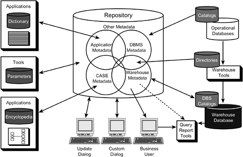
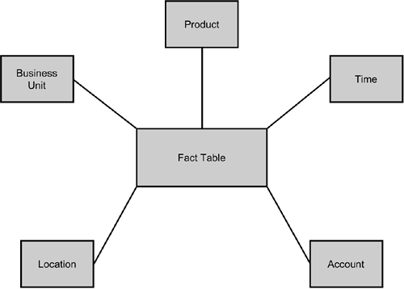

|
|
< Day Day Up > |
|
Designing a Data WarehouseWhen you're designing a data warehouse, be sure to drive the project from a plan. This plan should include methods to accomplish each of the following components of data warehouse development:
Many of these steps are similar to any application development project that is undertaken. However, the success of the data warehouse is contingent on all of these steps being planned and implemented in a consistent and manageable fashion. Several design issues, however, are somewhat unique to the data warehouse including metadata management and developing star and snowflake schemas. The Role of MetadataWhen you're designing a data warehouse, incorporating repository technology into the plans is a good idea. In addition to the standard role of a repository (storing the metadata and the data model for the corporation), it can act a single, centralized store to assist in the movement of data into the data warehouse. Furthermore, a repository can help end users as they access data by providing definitions of all data elements stored in the data warehouse. Alas, many shops do not own a repository. Even worse, some of them that do own a repository neglect the product, causing it to become "shelfware." There it sits on the shelf, and the metadata in the product is either outdated, inaccurate, or non-existent. This lack of use does not negate the value of repository products; it simply depicts the cavalier attitude that many organizations take toward their data. If you own a repository, the single most important thing that you can do to enhance the value of your data is to keep the metadata in the repository up-to-date. Doing so requires a lot of effort, a budget, and most of all, commitment. Refer to Figure 45.2 for a synopsis of the role a repository can play in data warehousing and how it fits in with the other, traditional duties of the repository. Figure 45.2. The role of the repository.Star SchemaThe star schema concept is common within a data warehousing environment. The star schema is also sometimes called a star-join schema, data cube, or multidimensional schema. The name star schema comes from the pattern formed by the data model when it is graphically depicted (refer to Figure 45.3). Figure 45.3. Star schema. Typically, a central fact table stores the primary business activity at the center of the star. The dimensions that affect the activity encircle the fact table. You can think of them as the points of the star. The DB2 optimizer understands and supports the star schema. In practice, when using databases designed with the star schema, users need to join the tables of the star together frequently. Consider the following example of a star join using the example star schema in Figure 45.3:
SELECT F.FACT, A.ACCTNO, T.TIME_PERIOD, P.PRODUCT_NAME, B.BUS_UNIT, L.LOCATION
FROM FACT_TABLE F,
ACCOUNT_TABLE A,
TIME_TABLE T,
PRODUCT_TABLE P,
BUSUNIT_TABLE B,
LOCATION_TABLE L
WHERE F.ACCT = A.ACCT
AND F.TIME = T.TIME
AND F.PROD = P.PROD
AND F.BU = B.BU
AND F.LOC = L.LOC;
This SQL statement represents a star join. Each of the five points of the star is joined back to the central fact table. If the fact table is very large, it is inefficient for DB2 to process this as a series of nested loop joins. Because the first join combines the large fact table with a small dimension table, each subsequent join also involves the large amount of data from the fact table. DB2 can detect this situation and invoke a star join technique. When a star join is deployed, the DB2 optimizer will choose to implement Cartesian products for the dimension tables. In the previous example, DB2 would join together the five dimension tables, ACCOUNT_TABLE, TIME_TABLE, PRODUCT_TABLE, BUSUNIT_TABLE, and LOCATION_TABLE, even though there were no join predicates to combine them. This is why a Cartesion product is required. But, because the FACT_TABLE is usually many times larger than the dimension tables, processing the fact table only once against the Cartesian product of the fact tables can enhance query performance. NOTE As many as six dimension tables (five prior to DB2 V6) can be joined as a Cartesian product for a star join in DB2. DB2 will not automatically deploy this star join technique for star schema joins. A star join will be used only when the DB2 optimizer determines that the star join will outperform other access path options. NOTE The star join itself is not a join method, such as nested loop, merge scan, and hybrid joins. DB2 will use the other join methods to accomplish the star join when a star join is chosen as the access path. Do not confuse a star join as a join method. A variation on this theme is the snowflake schema, in which the dimension tables can have additional relationships. In essence, in a snowflake schema, each dimension table is a mini-star itself. Once again, in this section I provide only a basic introduction to the star schema. For in-depth coverage, I recommend Ralph Kimball's excellent book, The Data Warehouse Toolkit: The Complete Guide to Dimensional Modeling, Second Edition (2002, John Wiley & Sons, ISBN 0-471-20024-7). |
|
|
< Day Day Up > |
|